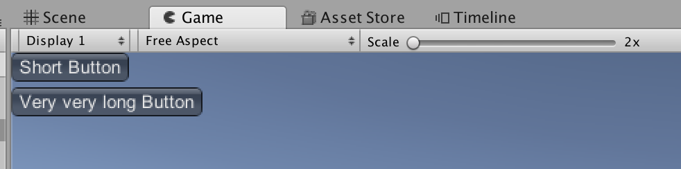

GUILayout.ExpandWidth
Description 描述
Option passed to a control to allow or disallow horizontal expansion.
If this is true, the enclosed UI elements can expand to fill the available horizontal width.
.
using UnityEngine; using System.Collections;
public class ExampleClass : MonoBehaviour { void OnGUI() { GUILayout.BeginVertical(); GUILayout.Button("Short Button", GUILayout.ExpandWidth(false)); GUILayout.Button("Very very long Button"); GUILayout.EndVertical(); } }